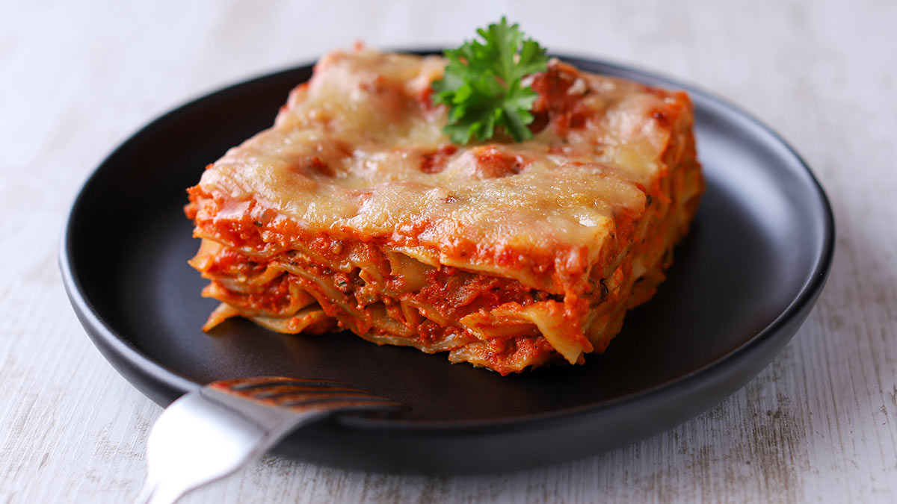

Lasagna

Description
Incredibly flavorful, hearty vegan lasagna made with 10 ingredients! Tender lasagna noodles are layered with Macadamia Nut Ricotta and tempeh-infused marinara sauce!
Ingredients
SAUCE
- 1 Tbsp avocado or olive oil
- 8 oz tempeh*, finely chopped
- 2 Tbsp coconut aminos (or sub tamari or vegan worcestershire sauce, but slightly reduce amount)
- 1/2 tsp fennel seed (optional)
- 1/4 tsp red pepper flake (optional)
- 2 (25-oz) jars favorite marinara sauce (or DIY*)
CHEESE
- 2 ¼ cups raw macadamia nuts (or raw cashews, soaked for 1 hour in hot water, then drained)
- 3 ½ Tbsp lemon juice
- 4 Tbsp nutritional yeast (plus more to taste)
- 3/4 tsp garlic powder
- 1/3 scant tsp sea salt
- 1/3 - 3/4 cup water
NOODLES
FOR SERVING
- Vegan Parmesan Cheese
- Fresh herbs (such as Basil or Parsley)
Instructions
- Preheat oven to 350 degrees F (176 C). Set out a large baking dish (9-13 inch or similar size) and lightly grease.
- Begin by preparing/warming your sauce. Heat a large pot or rimmed 12-inch skillet over medium heat. Once hot, add oil and tempeh (or mushrooms — we used a mixture of both) and begin sautéing, stirring occasionally, for about 3 minutes.
- Add coconut aminos (or worcestershire sauce), fennel (optional), and red pepper flake (optional) and continue sautéing for another 5 minutes. The mixture should be golden brown and well cooked.
- In the meantime, if using noodles that require boiling, bring a large pot of water to a boil (otherwise skip this step). Once boiling, add a healthy pinch of salt and your lasagna noodles (or other pasta shape). Cook according to package instructions to achieve an al dente texture — tender with a little bite. Then drain and set aside. Optional: Drizzle pasta with a little oil to prevent sticking.
- To the tempeh and/or mushrooms: Add your marinara sauce and stir to combine. Cook on low for about 5 minutes to marry the flavors. Then taste and adjust flavor as needed, adding salt to taste or red pepper flake for heat. Turn off heat and set aside.
- Next, make your "cheese." Add macadamia nuts (or sub soaked cashews) to a food processor or a high-speed blender along with lemon juice, nutritional yeast, garlic powder, and sea salt and mix/blend into a loose paste.
- Add lesser amount of water (1/3 cup or 60 ml as original recipe is written // adjust if altering batch size). Continue mixing, scraping down sides as needed. Then add more water — 1 Tbsp (15 ml) at a time — until a thick paste forms. I find I get the best texture results with a food processor, but a blender can work, too. It just generally requires more scraping and more liquid. For texture, you are looking for a thick, spreadable soft “cheese.”
- Taste and adjust flavor as needed, adding more nutritional yeast for cheesy flavor, salt for saltiness, lemon juice for acidity/brightness, or garlic powder for garlic flavor. Blend again to combine.
- To begin assembly, add a thin layer of marinara sauce to your baking dish. Spread to ensure even distribution. Then add a layer of the cooked pasta noodles (or uncooked noodles if using no-boil). Top with 1/3 of your cheese mixture and spread into an even layer.
- Add another layer of marinara sauce and use a spoon to spread over the cheese layer to coat. Then add another layer of noodles. Top with 1/3 of the cheese and spread into an even layer.
- Add another layer of marinara sauce and spread into an even layer. Then top with another layer of noodles and remaining 1/3 of the cheese, and spread into an even layer. Top with another layer of marinara sauce and spread into an even layer.
- Top with another layer of noodles and top with remaining sauce. Optional: Top with a sprinkle of vegan parmesan cheese.
- Transfer to the middle rack of your preheated oven and bake for 40-45 minutes uncovered, or until the sauce is bubbly and/or the edges are browned.
- Carefully remove from the oven and let cool 5-10 minutes before serving. Then slice, serve, and enjoy. We recommend garnishing with additional vegan parmesan cheese and fresh chopped basil or parsley.
credits: Minimalist Baker